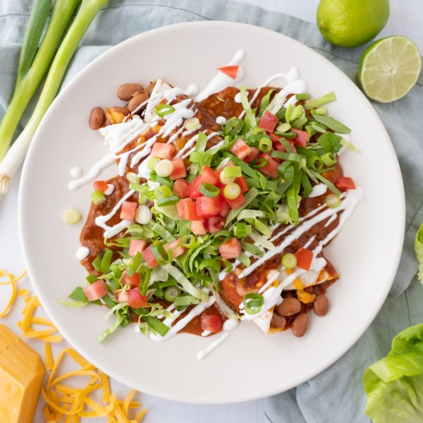

Smothered Cheesy Bean Burrito with Enchilada Sauce & Lime Crema

Nutrition (per serving)
668.9 kcalCalories
31.5 gProtein
78 gCarbs
27.8 gFat
Full nutrition table
| Calories | 668.9 kcal |
| Total fat | 27.8 g |
| Saturated fat | 10 g |
| Trans fat | 1.2 g |
| Cholesterol | 40.1 mg |
| Sodium | 996.5 mg |
| Carbohydrates | 78 g |
| Fiber | 13.6 g |
| Sugars | 12.1 g |
| Protein | 31.5 g |
| Potassium | 1197.8 mg |
| Calcium | 507.6 mg |
| Iron | 7.4 mg |
| Vitamin A | 1626.7 IU |
| Vitamin C | 26.9 mg |
| Vitamin D | 9.1 IU |
Cookware
Ingredients
- 1 headbutter (Boston) lettuce
- ⅔ (8 oz) blockcheddar cheese
- 8 fl ozchicken or vegetable broth
- 1 small bunchgreen onions (scallions)
- 4large flour tortillas
- 1lime
- 2 (15 oz) canspinto beans
- ½ cupplain Greek yogurt
- 2tomatoes
- 2 (8 oz) canstomato sauce
- ½ mediumyellow onion
- all-purpose flour
- chili powder
- cinnamon, ground
- cumin, ground
- extra virgin olive oil
- garlic powder
- oregano, dried
- salt
Steps
- Preheat oven to 350°F. Coat a large baking dish with a thin layer of oil and set aside.1 tsp extra virgin olive oil
- Coarsely grate cheese. Place half in a small bowl and set aside for burrito topping. (Reserve remaining cheese for the next step.)⅔ (8 oz) block cheddar cheese
- Drain and rinse beans in a colander. Transfer to a medium bowl along with the reserved cheese and spices; stir to combine the filling.2 (15 oz) cans pinto beans
½ tsp oregano, dried
¼ tsp cumin, ground
¼ tsp garlic powder
¼ tsp salt - Place tortillas on a flat surface and divide filling down the center of each one. Roll tortillas tightly to close and transfer to the baking dish, seam-side down. (The burritos should not be touching.)4 large flour tortillas
- Place baking dish in the oven (it doesn't have to be fully heated) and bake until burritos are slightly crispy and heated through, about 10 minutes.
- Meanwhile, preheat a medium saucepan over medium-high heat.
- While the pan heats up, peel and mince onion.½ medium yellow onion
- Once the pan is hot, add oil and swirl to coat the bottom. Add onion to the pan and cook, stirring often, until it begins to soften, 2-3 minutes.2 tbsp extra virgin olive oil
- Add flour and spices to the pan with the onion; continue to cook, stirring constantly, until fragrant, 30-60 seconds.4 tsp all-purpose flour
4 tsp chili powder
1 tsp cumin, ground
1 tsp garlic powder
½ tsp oregano, dried
¼ tsp salt
⅛ tsp cinnamon, ground - Slowly whisk tomato sauce and broth into the pan. Bring to a boil, then reduce heat and simmer, stirring occasionally, until slightly thickened, 3-4 minutes. Remove enchilada sauce from heat, cover, and set aside.2 (8 oz) cans tomato sauce
8 fl oz (1 cup) chicken or vegetable broth - Remove baking dish from the oven; pour enchilada sauce over the burritos and top with remaining cheese. Return to the oven and continue to bake until sauce is bubbly and cheese is melted, about 10 minutes. Remove from oven. (Reserve bowl for the lime crema.)
- Meanwhile, wash and dry the fresh produce.1 lime
1 head butter (Boston) lettuce
2 tomatoes
1 small bunch green onions (scallions) - Juice lime into the reserved bowl; add yogurt and salt. Whisk to combine the lime crema and set aside.½ cup plain Greek yogurt
⅛ tsp salt - Stack lettuce leaves, one on top of the other; halve lengthwise, then slice crosswise into thin (shred-like) strips. Transfer to a large plate.
- Small dice tomatoes. Trim green onions and cut crosswise into ¼-inch pieces; add both to the plate with the lettuce.
- To serve, divide burritos and sauce between plates. Drizzle burritos with lime crema; top with lettuce, tomato, and green onions. Enjoy!